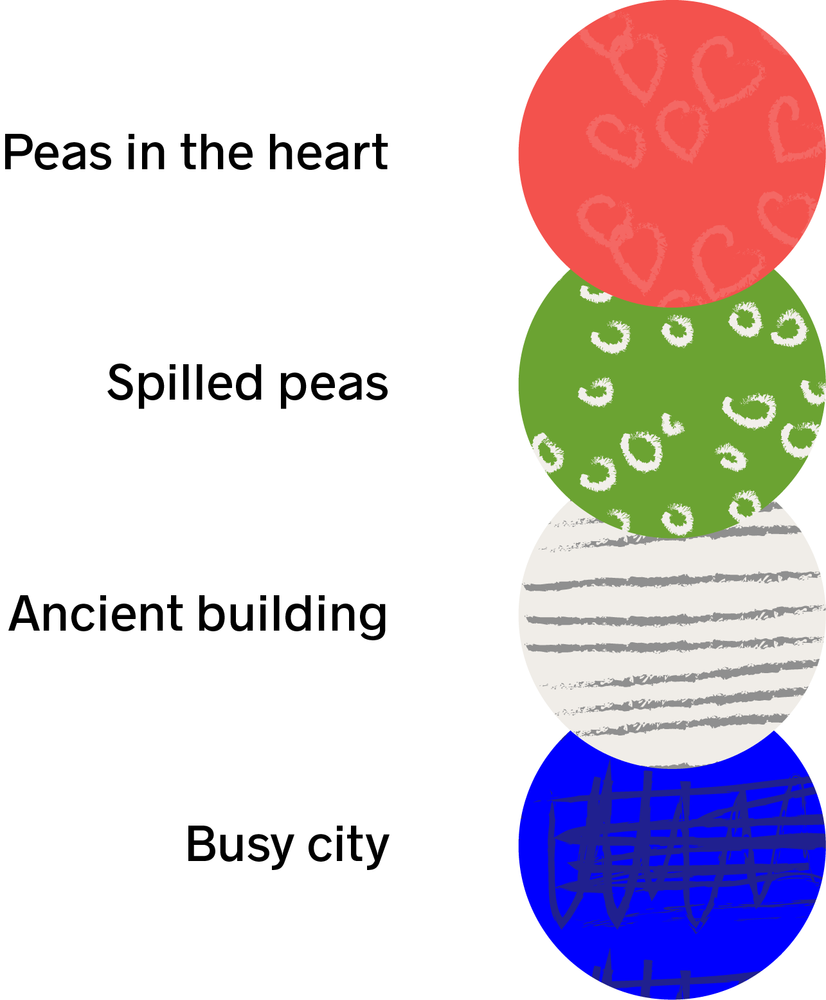
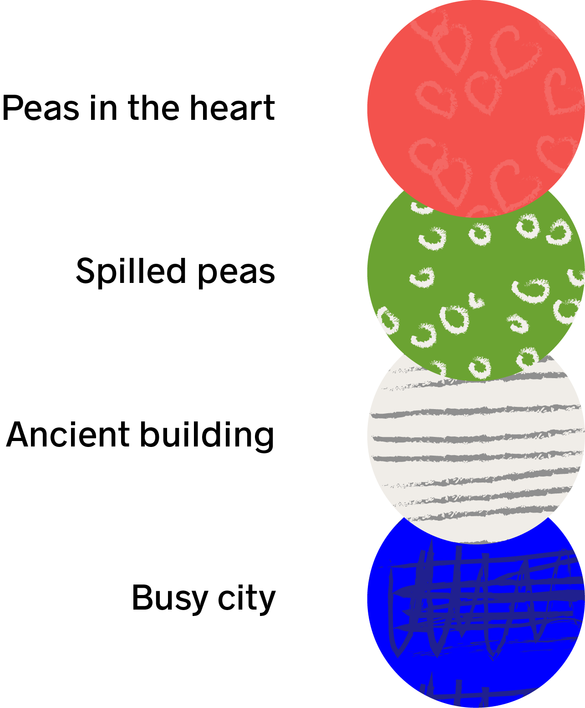

illustrations
the imperfect drawing
The illustartions reflect kind of childish imperfect drawing combined with fun wall paper patterns.

The illustartions reflect kind of childish imperfect drawing combined with fun wall paper patterns.

User testing was a great learning experience to make sure the product fits the user needs. I user tested with small group of professionals between the ages of 23 and 45 years.

The user was confused with multiple tools and did not understant where to actually collaborate.

The user wanted to drag and drop a folder to the chat space.
In this project I worked with minimum of four different users. Each of them brings unique business to our company. Some of them take longer to develop the trust and some of them are obvius at the biggining. Our mission is to observe and learn from our clients, their needs and behavior.
This project started with an assumtion of having only one kind of users which was the online shopper. After while we have noticed that we have another very important user which is user #1 from the national institutions. We have lost this user multiple times because we did not put enough research into this user’s needs. Our wholesale bussines grew the fastest and we are getting overwelmed by orders through emails. We have to create easier way how automitaze this process. While focusing on the online shopper (#4) we started to notice a new behavior and the user #2 was boren. Now we focuse on all users equaly and want to create more delightful experience and of course bring more bussines.